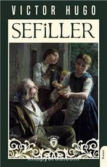
Victor Hugo'nun adalet, yoksulluk ve aşk temalarını işlediği dev eseri.
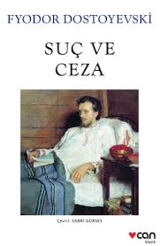
Raskolnikov'un ahlaki çıkmazlarını ve vicdan azabını konu alan derin bir psikolojik roman.
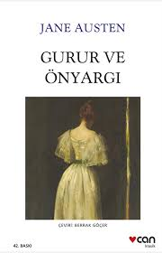
Elizabeth Bennet ve Bay Darcy'nin gurur ve toplumsal sınıflarla örülü aşk hikayesi.
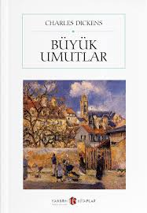
Pip'in genç yaşta edindiği büyük beklentiler ve bunların sonuçları.
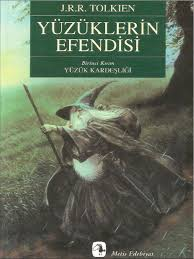
Frodo Baggins'in Tek Yüzük'ü yok etme yolculuğu ve Orta Dünya'nın kaderi.
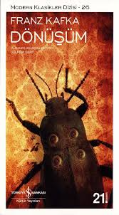
Gregor Samsa'nın bir böceğe dönüşmesini ve bunun ailesi üzerindeki etkilerini anlatan absürt bir eser.
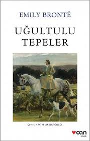
Heathcliff ve Catherine'in yıkıcı, tutkulu ve karanlık aşkının hikayesi.
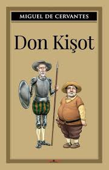
Şövalyelik romanlarıyla aklını yitiren Don Kişot'un maceraları.
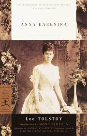
Evli bir kadın olan Anna'nın Kont Vronski ile yaşadığı tutkulu ve trajik aşk.
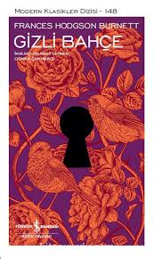
Mary Lennox'un İngiliz kırsalında keşfettiği gizemli bahçe ve kendini iyileştirme hikayesi.
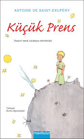
Bir pilotun çölde karşılaştığı Küçük Prens aracılığıyla dostluk ve hayatın anlamını keşfedişi.
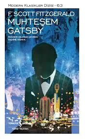
Jay Gatsby'nin lüks ve gizemli hayatı ile kayıp bir aşkı geri kazanma çabası.